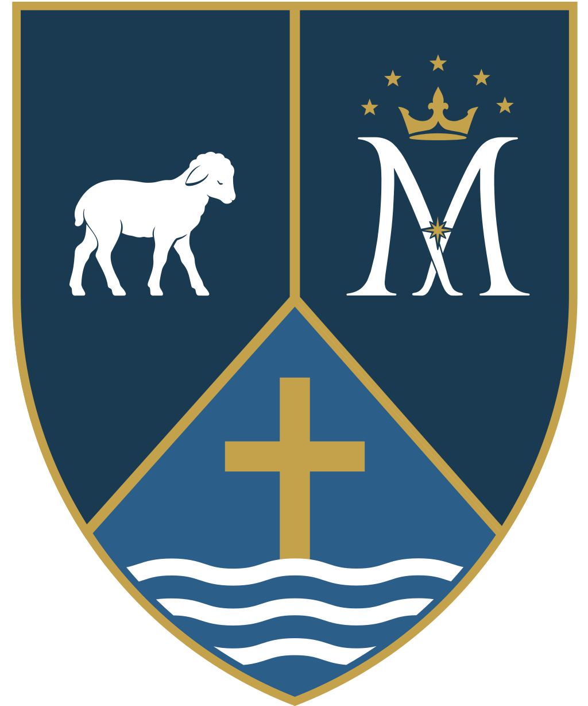

Cle Elum
St. John the Baptist
303 W. 2nd St. · Cle Elum, WA 98922
Saturday vigil5:00 p.m.
Sunday10:00 a.m.
Tuesday & Thursday8:00 a.m.
Confessions, Saturday3:30 p.m.
Two small parishes in the Cascade foothills, one pastor, one mission. Whether you've been with us for decades or you're visiting the valley for the weekend, you have a seat at the table.

Can't be with us in person? We livestream Sunday Mass every week, alternating between Cle Elum and Roslyn. Join us from home, or pray with a past Mass any time.
Curious about the Catholic faith, or returning after time away? The Order of Christian Initiation for Adults gathers Thursday evenings. No question is too small, and there's no pressure, only welcome.
Children's faith formation meets after the 10:00 a.m. Sunday Mass in Cle Elum, October through May. We walk with families from Baptism through First Communion and beyond.
Every gift, large or small, keeps the lights on, the heat running, and the doors open to anyone who needs a quiet place to pray.
Whether you've been here thirty years or thirty minutes, come as you are. Here's what to know before your first visit.
We're two small mountain parishes, St. John the Baptist in Cle Elum and Immaculate Conception in Roslyn, served by one pastor and united as one community of faith. Our churches were built by coal-mining families more than a century ago, and our pews still hold longtime residents, retirees, remote workers, skiers passing through, and young families who just moved to the valley.
We're small enough that the priest knows your name and big enough in spirit to welcome anyone who walks through the door. You don't need to know the prayers, own a suit, or have a perfect faith life. Just come.
There are no assigned seats. Arrive a few minutes early if you'd like a quiet moment to settle in, and don't worry if you're running late, slip in whenever you arrive.
Mass has a rhythm of standing, sitting, and kneeling. You don't need to know the responses, just follow the people around you, or simply sit and pray. No one is keeping score.
Catholics in a state of grace are welcome to receive the Eucharist. If you're not receiving, you're warmly invited to come forward for a blessing, just cross your arms over your chest.
The simplest first step. See the full weekly schedule for both churches.
Make this your parish home. Reach out to the office and we'll help you get registered.
Thinking about becoming Catholic, or coming back? OCIA is for you, at your own pace.
No need to print or mail anything. Tell us a little about your household and we'll take care of the rest, then reach out to welcome you.
We share one pastor between two churches. Daily and Sunday Mass alternate between Cle Elum and Roslyn, all are welcome at either.
Saturdays, 3:30 to 4:30 p.m. at St. John the Baptist in Cle Elum.
Or by appointment with Fr. Higuera. Call (509) 674-2531, ext. 5.
First Friday of each month, 8:30 a.m. to 12:00 p.m., alternating between the two churches. Check the parish calendar for the location.
Holy days of obligation follow a special schedule announced in the bulletin and at Mass. When in doubt, please call the parish office.
Two parishes, one family. Each community keeps its own history and character, and together we are more than either could be alone.
Catholics first gathered in these mountain valleys during the coal-mining boom of the 1880s, when the Northern Pacific Railway opened the upper Kittitas Valley and waves of immigrants from Italy, Croatia, Poland, and Ireland brought their faith to the Cascade foothills. Immaculate Conception parish was established in Roslyn in 1887, among the oldest in the Diocese of Yakima. The Catholic community in Cle Elum began as a mission of St. Andrew in Ellensburg that same decade, worshipping in homes and rented halls until their first church was built in 1902.
More than a century later, the two parishes still share a pastor, a sacramental life, and, as of 2026, a single visual identity. We are two places at one altar.

Our shared mark tells the same story the parishes live. St. John the Baptist points the way to Christ. Mary, his mother, stands beside the cross. The two churches gather around the same center.
A parish built by miners.
Catholic immigrants who came to work the coal seams of the upper valley first worshipped as a mission of St. Andrew in Ellensburg. By 1902 they had built their first church, and in 1914 the mission became an independent parish under the patronage of St. John the Baptist.
On June 25, 1918, a catastrophic fire swept through Cle Elum, destroying the church and rectory along with much of the city. The present brick church, with its distinctive wooden belfry, was built in 1921 and has served the parish ever since, the spiritual home of generations of mining families, ranchers, retirees, and newcomers who call the valley home.
The older of our two parishes.
Roslyn was founded in 1886 as a coal-mining company town, and its Catholic families were among its earliest settlers. The parish was established in 1887, among the oldest in the Diocese of Yakima, and the church was completed in October 1888. Immaculate Conception Church and Rectory are contributing buildings to the Roslyn Historic District, placed on the National Register of Historic Places in 1978.
Badly damaged in the 2001 Nisqually earthquake, the church was carefully restored. In 2025, under Fr. Francisco Higuera, the parish completed a major historic restoration, renewing plaster, decorative painting, original artwork, woodwork, and lighting, and reopened the church in time for Christmas, preserving Roslyn's Catholic and immigrant heritage for the next generation.
Father Francisco serves both parishes as our one shared pastor, celebrating daily and Sunday Mass across two churches, leading OCIA, preparing couples for marriage, and accompanying our community through every sacrament and season. To reach him, call the parish office at (509) 674-2531, ext. 5.
The larger of our two parishes, first built in 1902 by the immigrant families who came to mine the coal seams of the upper valley.
Catholic immigrants from Italy, Croatia, Poland, and Ireland came to work the coal seams of the upper valley and first worshipped as a mission of St. Andrew in Ellensburg. By 1902 they had built their first church, and in 1914 the mission became an independent parish under the patronage of St. John the Baptist.
On June 25, 1918, a catastrophic fire swept through Cle Elum, destroying the church and rectory along with much of the city. The present brick church, with its distinctive wooden belfry, was built in 1921 and has served the parish ever since.
John the Baptist was the cousin of Jesus and the last of the prophets who came before Christ. He preached in the wilderness, calling people to turn back to God and to be baptized as a sign of that change of heart.
When Jesus arrived, John pointed him out to the crowds, saying, “Behold the Lamb of God.” That is the lamb that appears on our shield. His role, then and now, is to point the way to Christ. We celebrate his nativity on June 24.
Baptism, Confirmation, marriage, and the mercy of Reconciliation.
Religious education for children, OCIA, and FORMED.
Join us online every Sunday from home.
Your generosity keeps our church warm, our doors open, and our ministries alive in Cle Elum.
Give to St. John the Baptist
The older of our two parishes, established in 1887 and among the oldest in the Diocese of Yakima. Named for the Mother of God, who keeps watch over this corner of the valley.
Roslyn was founded in 1886 as a coal-mining company town, and its Catholic families were among its earliest settlers. The parish was established in 1887, among the oldest in the Diocese of Yakima, and the church was completed in October 1888. Immaculate Conception Church and Rectory are contributing buildings to the Roslyn Historic District, placed on the National Register of Historic Places in 1978.
Badly damaged in the 2001 Nisqually earthquake, the church was carefully restored. In 2025, under Fr. Francisco Higuera, the parish completed a major historic restoration, renewing plaster, decorative painting, original artwork, woodwork, and lighting, and reopened the church in time for Christmas, preserving Roslyn's Catholic and immigrant heritage for the next generation.
The Immaculate Conception is the Catholic belief that Mary, the mother of Jesus, was conceived without the stain of original sin from the very first moment of her existence. God prepared her, in advance, to be the mother of his Son.
She is the woman who said yes to the angel, who stood by Jesus at the cross, and who was given to all Christians as our mother. Her monogram, an interlaced M crowned with twelve stars, is the third figure on our shield. Her feast is December 8.
Baptism, Confirmation, marriage, and the mercy of Reconciliation.
Religious education for children, OCIA, and FORMED.
Join us online every Sunday from home.
Your generosity cares for a historic church and keeps the faith alive in Roslyn for the next generation.
Give to Immaculate ConceptionThe sacraments mark the milestones of a life of faith, from the waters of Baptism to the anointing of the sick. We're honored to walk each one with you.
The beginning of new life in Christ. Baptisms are celebrated on the second and fourth weekends. Reach out to the office to begin preparation.
Children receive the Eucharist for the first time after a two-year preparation, walked alongside their families through our Religious Education program.
Sealed with the gift of the Holy Spirit. We prepare young people and adults to be confirmed and sent out as witnesses of the faith.
No questions, no judgment, just the mercy of God. Confessions are heard Saturday afternoons at St. John the Baptist, or any time by appointment.
Marriage is a covenant and a vocation. Couples begin a six-step preparation process with Father at least six months before the wedding date.
For those facing serious illness, surgery, or the frailty of age. Call the office any time, day or night in an emergency, to arrange anointing.
Is God calling you to the priesthood or diaconate? Speak with Father, and explore the vocations resources of the Diocese of Yakima.
We accompany families in grief with the hope of the Resurrection. Contact the office to plan a funeral Mass and entrust your loved one to God's mercy.
Faith is a journey, not a checkbox. We walk with people of every age, from children to lifelong Catholics to those exploring the faith for the first time.
Children's faith formation meets after the 10:00 a.m. Sunday Mass at St. John the Baptist, October through May. We form the next generation in the faith, from Baptism through First Communion and beyond. Contact Trish Griswold to register.
The Order of Christian Initiation for Adults is for anyone exploring the Catholic faith or completing their sacraments. We gather Thursday evenings at St. John the Baptist. Inquirers are always welcome, come as you are, at your own pace.
FORMED is the “Catholic Netflix”, thousands of movies, studies, and books for every age, in English and Spanish, free to our parishioners. Sign up with your email and our parish zip code, 98922.
Sign up on FORMED →"We don't prepare people for sacraments and then abandon them. We walk with people from curiosity to belonging to discipleship."
Your generosity keeps two historic churches warm and open, supports our ministries, and builds something lasting for the next generation in this valley.
Support the offertory, ministries, and upkeep of St. John the Baptist. One-time or recurring gifts, by card or bank transfer.
Give to St. John the Baptist
Support the offertory, ministries, and the continued care of historic Immaculate Conception. One-time or recurring gifts welcome.
Give to Immaculate ConceptionThe yearly appeal that sustains the ministries, schools, and charities of the Diocese of Yakima, work no single parish could carry alone.
Learn more & giveCare for the priests who have given their lives in service, and form the next generation answering the call to the priesthood.
Learn more & giveWhen you give by bank transfer, more of your gift goes directly to our mission.
Both giving forms accept recurring gifts and bank (ACH) transfers, which carry lower processing fees than credit cards. Questions about giving or year-end statements? Contact the parish office and we'll be glad to help.
We livestream Sunday Mass every week, alternating between Cle Elum and Roslyn. Join us live, or pray with a recent Mass any time.
If no stream is playing, the next Sunday Mass will appear here shortly before it begins. You can also visit our channel for past Masses.
One office serves both parishes. We'd love to hear from you, whether you're registering, planning a sacrament, or just saying hello.
parish@ukccatholic.org · ext. 2
accounting@ukccatholic.org · ext. 3
tech@ukccatholic.org
faithformation@ukccatholic.org
Contact via the parish office
music@ukccatholic.org
Whatever you're carrying, you don't carry it alone. Share your intention and our community will hold it in prayer. All requests are kept confidential.